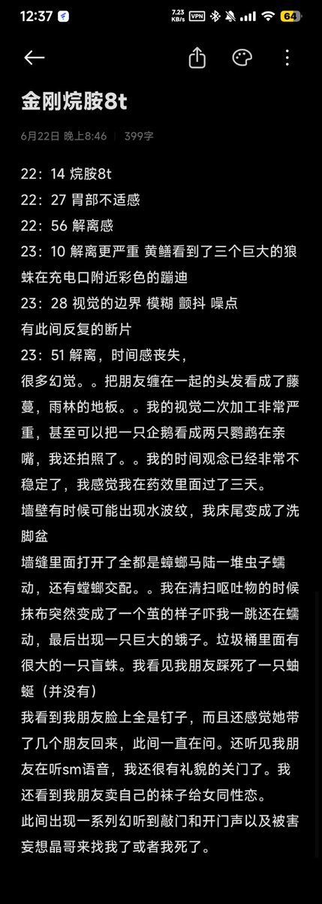

箸
@breakcoreWTF
@Despairq6 @Makima_0411 老大你可以看看这个，不得了，！这个，金刚烷胺吃了之后。我，变成一只，鸡？操你妈。，我要，跳楼。

Despair
@Despairq6
@Makima_0411 這個o了是什么感觉呀，没吃过。。。
箸
@breakcoreWTF
时间完全错乱了我看到一堆虫子后面忘了想体验烷胺的我替你们避雷了 https://t.co/CFt2hBV109